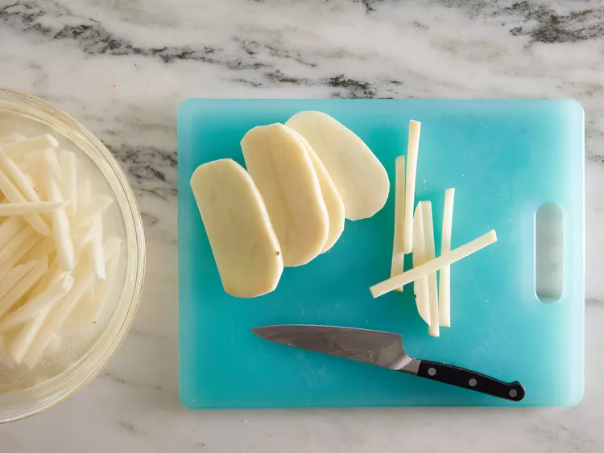
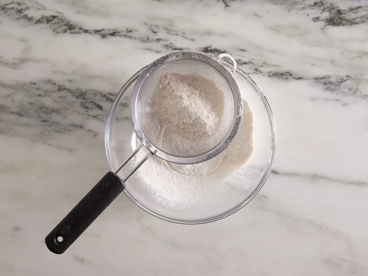
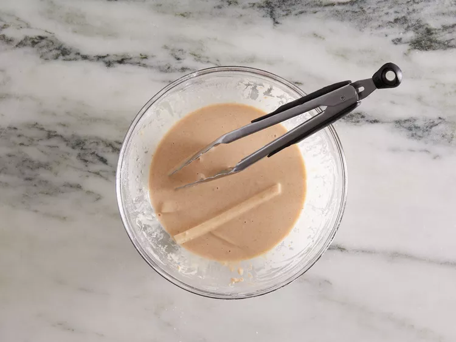
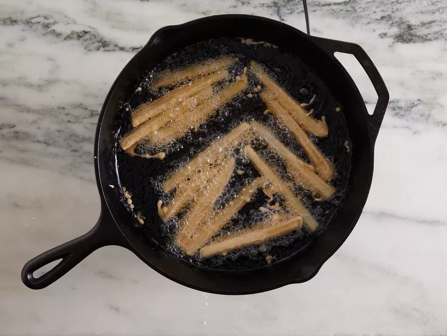
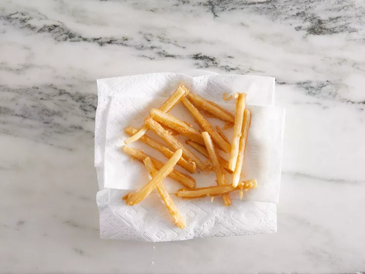

Ingredients
- 2 ½ pounds russet potatoes, peeled
- 1 cup vegetable oil for frying
- 1 cup all purpose flour
- 1 teaspoon garlic salt
- 1 teaspoon onion salt
- 1 teaspoon paprika
- 1 teaspoon salt
- ½ cup water, or as needed
Directions
- Step 1:
- Step 2:
- Step 3:
- Step 4:
- Step 5:
- Step 6:
- Step 7:
Slice potatoes into French fries and place them into a large bowl of cold water to prevent them from turning brown.
Heat oil in a heavy saucepan or large skillet to 350 degrees F (175 degrees C).
While the oil is heating, sift flour, garlic salt, onion salt, paprika, and salt into a large bowl. Gradually stir in enough water to make a slightly thick batter that can be drizzled from a spoon.
Drain fries and pat dry; dip into the batter one at a time.
Lower fries carefully into the hot oil in batches to prevent them from clumping together. Fry until golden brown and crispy on all sides, about 7 to 10 minutes.
Drain fries on a paper towel-lined plate.
Serve hot and enjoy!